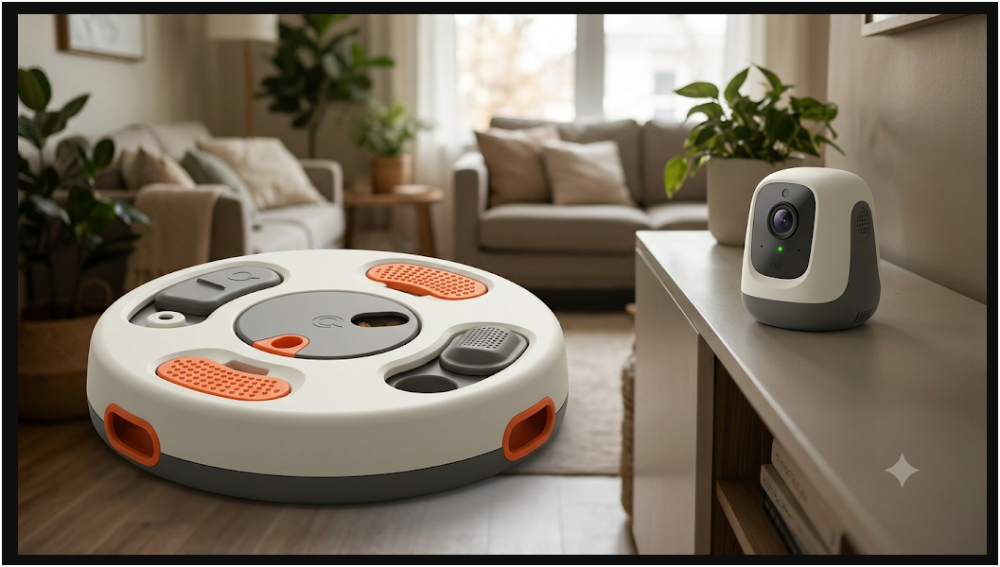
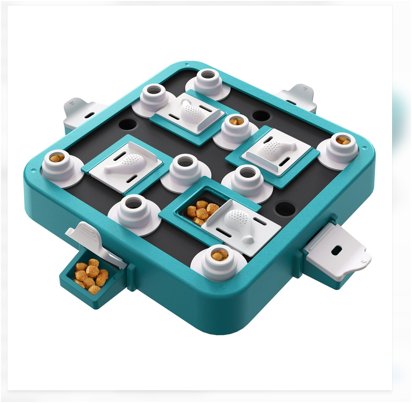

One camera sees one room.
Footage tells you what already happened. A single sensor misses the stairs, the hallway, the garden gate. Shepherd's Seekers overlap, vote and hand off — so the dog never drops out of view.
Seeker Mesh × Action Taker
Shepherd is a mesh of Seekers that watch without blinking — one per room, hallway, garden — all talking to each other so sight never breaks. They connect to a single Action Taker that engages your dog with puzzles, play, scent and sound the moment guidance is needed.
The gap
A gate left ajar. A delivery at the door. A scent that pulls. Dogs rarely get lost over hours — they get lost in the gap between one room and the next, between one camera's view and the next.
Footage tells you what already happened. A single sensor misses the stairs, the hallway, the garden gate. Shepherd's Seekers overlap, vote and hand off — so the dog never drops out of view.
Toys sit in one room. Treats are in the kitchen. Shepherd's Action Taker follows the dog — puzzles, ball play, scent trails and sound cues activate wherever the dog is.
Cameras record. Collars shock. Shepherd's mesh detects movement, the Action Taker responds: a puzzle to solve, a ball to chase, a scent to follow, a sound to investigate — escalating only if needed.
The system
Every Shepherd install is a conversation between a mesh of Seekers that watch and a single Action Taker that engages. Each scales independently — add Seekers for coverage, the Action Taker handles the rest.
Multiple Seekers placed throughout your home and garden. Each watches ~1,200 sq ft with vision, mmWave radar and UWB. They form a Thread mesh, vote on position, and hand off in under 400 ms as your dog moves.
One device that does it all. Connected to the Seeker mesh, it activates only when the dog moves — engaging with puzzles, play, scent, sound and rewards. Rests when the dog rests.
Seekers lock identity, position and behaviour via mesh consensus.
Mesh detects sustained movement, room change or boundary approach.
Action Taker activates: puzzle, ball, scent, light or sound — matched to context.
Measured treat on success; auto-complete if dog exhausts; loop resets.
The mesh
Place Seekers in each zone. They form a Thread mesh, share identity via the Tag, and hand off instantly. Tap a Seeker to see its view; tap the Action Taker to see its current mode.
Action Taker
The Action Taker connects to the Seeker mesh via Thread. It stays idle while your dog rests. The moment sustained movement is detected — pacing, room transitions, boundary approach — it chooses the right engagement: a puzzle to solve, a ball to chase, a scent to follow, a sound to investigate.


Seeker Tag pulse sensor + vision confirm rest state. Action Taker stays completely silent — no lights, sounds or movement. Zero false activations.
Activates on sustained movement (>10 s), room-to-room transitions detected by mesh handoff, or virtual boundary approach. Configurable sensitivity per dog.
Sliding mechanical panels + rotating channel wheel. Dog pushes panels, rotates wheel to align channels → measured treat dispensed. If dog tires (no progress 60 s), Auto-Solve rotates wheel, releases treat, logs completion.
Internal mechanism rolls a safe, replaceable ball in unpredictable patterns across the floor. Variable speed, direction changes, pause-and-dart — mimics prey movement. Auto-stops on collision or pickup.
Replaceable scent cartridge (bacon, peanut butter, cheese, custom). Micro-pump releases measured puffs at puzzle start, along ball path, or at virtual boundary. Cartridge lasts ~30 days.
Gentle recall tone → unusual "curiosity" sounds (crinkle, chirp, short whistle) if dog doesn't approach → directional beep from boundary. Volume adaptive to time of day.
If the dog ignores the current engagement (no approach after 30 s), the Action Taker emits an unusual attention sound — crinkle, high-pitched chirp, or novel whistle — designed to trigger orienting reflex. Once the dog looks/approaches, it switches to a different puzzle variant (e.g., panel sequence changes, wheel pattern shifts) with a fresh scent puff, giving a new chance to engage. Escalation logs as "fallback" for your review.
Only puzzles, play, scent, sound and treats. Vet-reviewed. Built around reward, not correction.
If the dog tires or struggles, the puzzle completes itself and dispenses the treat. No frustration, no giving up.
If the Action Taker is offline, jammed, or out of treats, the mesh alerts you with the last known state and dog position.
Demo
Watch how the Seeker mesh detects movement and the Action Taker responds with puzzles, ball play, scent and sound — all driven by real dog behaviour.
Tag UWB + Seeker vision confirm dog moving from living room to hallway. Mesh handoff in 340 ms.
Context: daytime, dog not recently engaged → Puzzle mode. LED ring pulses amber, scent puff released.
Nala approaches, pushes sliding panel 1, rotates wheel to position 3, panel 2 aligns → treat dispensed.
If no progress in 60 s: wheel auto-rotates to solution, treat dispensed, event logged as "assisted".
Next movement trigger → ball mode. Roller launches ball in zig-zag, Nala chases, IR detects pickup → pause.
Tag pulse drops, vision confirms settle. Action Taker idle. Mesh logs full session with timestamps.
Live Preview
Click Start Simulation to watch the Seeker camera detect Nala, track her gestures, and trigger the Action Taker's response chain: sound attraction → puzzle → reward → auto-solve → ball play.
Coverage planner
Three answers and we'll propose a Seeker configuration and the Action Taker — one per home.
Recommended for your home
Three Seekers (Hub + 2 Nodes) for rooms and garden door, plus Action Taker.
No payment today. You can change the configuration before shipping.
Kits
Every kit includes one Action Taker. Add Seekers any time — the mesh re-forms itself in minutes.
Essential coverage
$599
Best for apartments, single-floor homes.
Full indoor mesh
$899
Best for multi-room homes, garden access.
Indoor + outdoor
$1,349
Best for large homes, gardens, escape artists.
Shepherd OS is free and runs locally. Cloud Relay ($9/mo, optional) adds remote live view and multi-home access. Action Taker is one per home.
Hardware
No spinning drives, no blinking routers, no subscription required to keep watch. Everything below runs on a local Thread mesh.
Video and audio stay on the mesh. Clips encrypted, kept 24 hours on Hub, only leave if you export. Faces masked before storage.
Seekers and Action Taker talk over Thread. If broadband drops, the loop keeps running and alerts queue until connection returns.
Each Seeker Tag creates a profile. Seekers track up to four dogs at once, keep identities separate when they cross paths. One Action Taker serves all.
Questions
No. A dog is an animal with its own mind. The Action Taker engages — puzzles, play, scent, sound — to redirect attention and reward good choices. It doesn't force, restrain or correct. Think of it as an always-ready playmate that knows when to step in.
The Action Taker adapts. If puzzle progress stalls, it auto-solves and still gives the treat (so no frustration). If the dog ignores puzzles, it tries ball play, then scent trails, then curiosity sounds. You set the preference order in the app.
One Seeker covers roughly 1,200 sq ft with clear line of sight. In practice: one per two rooms, plus one Field unit per garden zone. The coverage planner above does the arithmetic for your home.
The last Seeker keeps the Tag's GPS fix, the mesh alerts you with the last confirmed position, and nearby Seekers keep scanning. The Action Taker can emit a directional boundary beep if the dog approaches a virtual fence.
Yes. Each dog gets a Tag and profile. Seekers track up to four at once. The Action Taker runs sessions sequentially or in parallel (puzzle for one, ball for another) based on who's active.
No. Shepherd OS runs locally and is free. Cloud Relay is optional at $9/mo for remote live view and multi-home access.
Processing happens on the Hub. People's faces and family conversation are masked before any storage. Video is encrypted, kept for 24 hours, and only leaves the mesh if you export it.
Yes. No pinch points (enclosed motors), non-slip weighted base, IR collision stop on ball, force-limited puzzle motors, BPA-free treat drum, breakaway scent cartridges. Vet-reviewed. Still, we recommend initial supervised sessions.
Pre-orders reserve a place in the first production run, shipping in waves. No payment today. Cancel any time before your wave is confirmed.
Pre-order
Tell us where your dog lives and which kit you want. We'll confirm the configuration by email — no payment is taken today.
Reserved
We've received your reservation and sent a confirmation to your email.